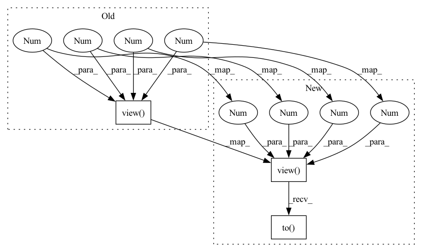

Pattern ID :30577

Before Change
1 + bf.sum(-1), dim1=-1, dim2=-2)
// eye 3x3 in 1x3x3x1x1
I33 = torch.eye(3, 3).view(1, 1, 3, 3, 1, 1)
// compute the delta_ab * delta_ij * (1 + sum k \neq i eta(rik))
// Nbatch x Ndim x Ndim x Nelec x Nelec (diagonal matrix)
delta_ab_delta_ij_bf = I33 * \
After Change
1 + bf.sum(-1), dim1=-1, dim2=-2)
// eye 3x3 in 1x3x3x1x1
eye_mat = torch.eye(3, 3).view(
1, 1, 3, 3, 1, 1).to(self.device)
// compute the delta_ab * delta_ij * (1 + sum k \neq i eta(rik))
// Nbatch x Ndim x Ndim x Nelec x Nelec (diagonal matrix)
delta_ab_delta_ij_bf = eye_mat * \
In pattern: SUPERPATTERN
Frequency: 5
Non-data size: 3
Instances
Fragment ID: 90394979
Project Name: nlesc-jcer/qmctorch
Commit Name: 0985081a58533ad868a6a87e6efce599f95d4142
Time: 2021-05-18
Author: nicolas.gm.renaud@gmail.com
File Name: qmctorch/wavefunction/orbitals/backflow/orbital_dependent_backflow_transformation.py
M Class Name: OrbitalDependentBackFlowTransformation
N Class Name: OrbitalDependentBackFlowTransformation
M Method Name: _backflow_derivative(2)
N Method Name: _backflow_derivative(2)
M Parent Class: nn.Module
N Parent Class: nn.Module
M File Name: qmctorch/wavefunction/orbitals/backflow/orbital_dependent_backflow_transformation.py
N File Name: qmctorch/wavefunction/orbitals/backflow/orbital_dependent_backflow_transformation.py
M Start Line: 128
M End Line: 128
N Start Line: 133
N End Line: 134
'>
Before Change
if "denormalize" in self.test_cfg:
mean = torch.tensor(self.test_cfg["denormalize"]["mean"]).view(
1, -1, 1, 1)
std = torch.tensor(self.test_cfg["denormalize"]["std"]).view(
1, -1, 1, 1)
lq = lq * std + mean
if gt.dim() == 3:
mean = torch.tensor(self.test_cfg["denormalize"]["mean"]).view(
-1, 1, 1)
After Change
device = output.device
mean = torch.tensor(self.test_cfg["denormalize"]["mean"]).view(
1, -1, 1, 1).to(device)
std = torch.tensor(self.test_cfg["denormalize"]["std"]).view(
1, -1, 1, 1).to(device)
lq = lq * std + mean
if gt.dim() == 3:
mean = torch.tensor(self.test_cfg["denormalize"]["mean"]).view(
-1, 1, 1).to(device)
'>
Fragment ID: 90394993
Project Name: ryanxingql/powerqe
Commit Name: 2aab2aaabc9493b7499c0270af1947e1c6fbbe85
Time: 2023-05-25
Author: ryanxingql@gmail.com
File Name: powerqe/models/restorers/basic_restorer.py
M Class Name: BasicVQERestorer
N Class Name: BasicVQERestorer
M Method Name: forward_test(7)
N Method Name: forward_test(7)
M Parent Class: BasicRestorer
N Parent Class: BasicRestorer
M File Name: powerqe/models/restorers/basic_restorer.py
N File Name: powerqe/models/restorers/basic_restorer.py
M Start Line: 395
M End Line: 404
N Start Line: 392
N End Line: 406
'>
Before Change
if not isinstance(rnd_scale, torch.Tensor):
rnd_scale = torch.Tensor([rnd_scale]).view(1, 1, 1, 1)
rnd_scale = rnd_scale.expand([output_size[0] * output_size[1], 1, 1, 1])
else:
rnd_scale = rnd_scale.view(-1, 1, 1, 1)
rnd_scale = rnd_scale.expand([output_size[0], output_size[1], 1, 1])
After Change
if not isinstance(rnd_scale, torch.Tensor):
rnd_scale = torch.Tensor([rnd_scale]).view(1, 1, 1, 1).to(device)
rnd_scale = rnd_scale.expand([output_size[0] * output_size[1], 1, 1, 1])
else:
rnd_scale = rnd_scale.view(-1, 1, 1, 1)
rnd_scale = rnd_scale.expand([output_size[0], output_size[1], 1, 1])
'>
Fragment ID: 90394918
Project Name: anguelos/tormentor
Commit Name: 553c2e031b46a5fb0d8597cce7394ae810ba4959
Time: 2020-06-15
Author: anguelos.nicolaou@gmail.com
File Name: diamond_square/diamond_square.py
M Class Name: AnonimousClass
N Class Name: AnonimousClass
M Method Name: functional_diamond_square(6)
N Method Name: functional_diamond_square(6)
M Parent Class:
N Parent Class:
M File Name: diamond_square/diamond_square.py
N File Name: diamond_square/diamond_square.py
M Start Line: 155
M End Line: 155
N Start Line: 155
N End Line: 155
'>
Before Change
1 + bf.sum(-1), dim1=-1, dim2=-2)
// eye 3x3 in 1x3x3x1x1
I33 = torch.eye(3, 3).view(1, 3, 3, 1, 1)
// compute the delta_ab * delta_ij * (1 + sum k \neq i eta(rik))
// Nbatch x Ndim x Ndim x Nelec x Nelec (diagonal matrix)
delta_ab_delta_ij_bf = I33 * \
After Change
1 + bf.sum(-1), dim1=-1, dim2=-2)
// eye 3x3 in 1x3x3x1x1
I33 = torch.eye(3, 3).view(1, 3, 3, 1, 1).to(self.device)
// compute the delta_ab * delta_ij * (1 + sum k \neq i eta(rik))
// Nbatch x Ndim x Ndim x Nelec x Nelec (diagonal matrix)
delta_ab_delta_ij_bf = I33 * \
'>
Fragment ID: 90394985
Project Name: nlesc-jcer/qmctorch
Commit Name: c3e5a537f995cf273fe966fdb6d927fe31835290
Time: 2021-05-17
Author: nicolas.gm.renaud@gmail.com
File Name: qmctorch/wavefunction/orbitals/backflow/backflow_transformation.py
M Class Name: BackFlowTransformation
N Class Name: BackFlowTransformation
M Method Name: _backflow_derivative(2)
N Method Name: _backflow_derivative(2)
M Parent Class: nn.Module
N Parent Class: nn.Module
M File Name: qmctorch/wavefunction/orbitals/backflow/backflow_transformation.py
N File Name: qmctorch/wavefunction/orbitals/backflow/backflow_transformation.py
M Start Line: 118
M End Line: 118
N Start Line: 123
N End Line: 123
'>
Before Change
// denormalize before image saving and evaluation
if "denormalize" in self.test_cfg:
mean = torch.tensor(self.test_cfg["denormalize"]["mean"]).view(
1, -1, 1, 1)
std = torch.tensor(self.test_cfg["denormalize"]["std"]).view(
1, -1, 1, 1)
output = output * std + mean
lq = lq * std + mean
After Change
// denormalize before image saving and evaluation
if "denormalize" in self.test_cfg:
device = output.device
mean = torch.tensor(self.test_cfg["denormalize"]["mean"]).view(
1, -1, 1, 1).to(device)
std = torch.tensor(self.test_cfg["denormalize"]["std"]).view(
1, -1, 1, 1).to(device)
output = output * std + mean
lq = lq * std + mean
'>
Fragment ID: 90394895
Project Name: ryanxingql/powerqe
Commit Name: 2aab2aaabc9493b7499c0270af1947e1c6fbbe85
Time: 2023-05-25
Author: ryanxingql@gmail.com
File Name: powerqe/models/restorers/basic_restorer.py
M Class Name: BasicQERestorer
N Class Name: BasicQERestorer
M Method Name: forward_test(7)
N Method Name: forward_test(7)
M Parent Class: BasicRestorer
N Parent Class: BasicRestorer
M File Name: powerqe/models/restorers/basic_restorer.py
N File Name: powerqe/models/restorers/basic_restorer.py
M Start Line: 155
M End Line: 158
N Start Line: 155
N End Line: 159